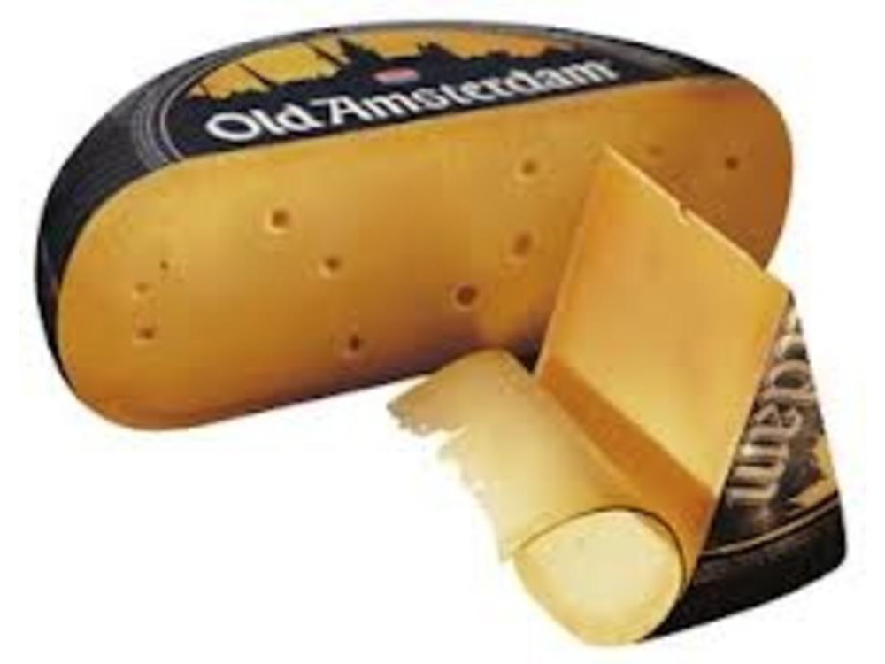
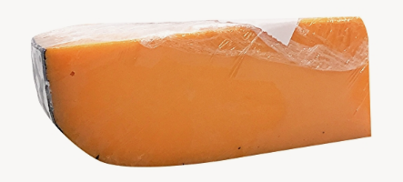
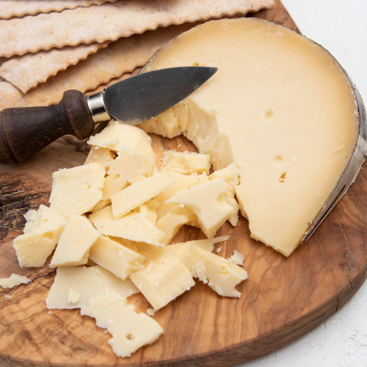
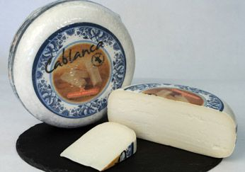
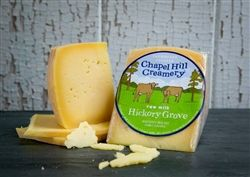
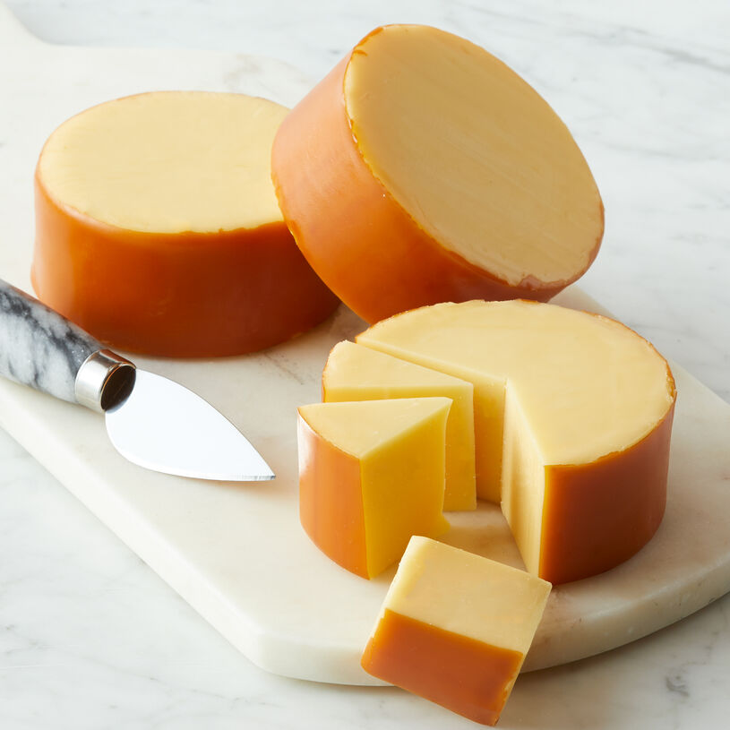

Gouda#
16 Month Gouda (might be 18 or 36… those seem to be two options) (Clarina)#

Origin: Netherlands
Milk: Cow
Purchase location: Whole Foods
Purchase date: 04/03/22
Julie’s comments: Yum! Hard tan cheese with white crystals scattered through it, & an orange waxy rind. Tastes quite sharp & aged, like a Pecorino, but has nutty & caramely notes like a Gouda. Dries out a bit with time, but still tasty. So snackable. 4.57/5
Andrew’s comments: Quite aged, hard cheese with interesting crystals texture inside. Very caramely, semi sharp, nutty, & hint of orange. Tasty but a bit rich for me to have more than a couple pieces. Dried out, eat fast. 3.8/5
Aged Gouda (Old Amsterdam)#
{kind=link}
Origin: Netherlands
Milk: Cow
Purchase location: Weaver Street
Purchase date: 02/20/22
Julie’s comments: Tan-orange color with brown waxy rind. Dries out with time. Pretty mild flavor - sharper toward the rind (a bit cheddar like) and then a nutty, mild caramel flavor in the middle. Good with a light red wine, eg Pacific Redwood Organic Pinot 2020. 3.1/5
Andrew’s comments: Quite tasty, sweet & caramely at first, with more sharp cheddary flavor later. A bit firmer than most Goudas which is nice. Very snackable, nice with salty chip, good pairing with our Pinot Noir with spice flavors. 3.7/5
Boo-da Gouda (Spring Koe)#
{kind=link}
Origin: Netherlands
Milk: Cow
Purchase location: Whole Foods
Purchase date: 10/30/21
Julie’s comments: Cantaloupe-colored with black rind, hard/firm. Mix of cheddar & gouda taste, not remarkable but good, melts well. Creamyish, sharp deep flavor, good with spice. 2.81/5
Andrew’s comments: Agreed, gouda-cheddar hybrid, moderately sharp. Nice semi-crumbly mouthfeel. Very nice with a salty chip, super snackable. 3.2/5
Estate Gouda (Murray’s Cheese)#
{kind=link}
Origin: Netherlands
Milk: Cow
Purchase location: Murray’s Cheese
Purchase date: 01/14/22
Julie’s comments: Pale yellow firm cheese that gets slightly darker at the rind - brown waxy rind. Nutty, caramely, woodsy flavor. Melts in the mouth & on a savory smoky food. Does dry out a bit with time. 3.84/5
Andrew’s comments: Firm near rind, softer & a bit less pleasant (kind of American cheesy) in terms of texture near center. Rich, earthy, “cool” taste, with caramel & nuttiness. Intersting flavor, especially closer to rind. Would give a bit higher rating near rind (4.1), and lower near center (2.5) 3.3/5
Thanks to Tim & Abigail Necarsulmer for this cheese!
Goat Gouda (Cablanca)#
{kind=link}
Origin: Netherlands
Milk: Goat
Purchase location: Weaver Street
Purchase date: 08/21/21
Julie’s comments: Off white color, firm. Tangy like goat cheese, but creamy, buttery & nutty like gouda. Melts well, great alone or with most things. Purchased with Chardonnay for Becky. 4.82/5
Andrew’s comments: Great cheese, similar to white cheddar but not too sharp, more nutty. Nice goaty crumbly mouth feel. 4.1/5
Midnight Moon (Cypress Grove)#

Origin: Netherlands
Milk: Goat
Purchase location: Whole Foods
Purchase date: 11/26/21
Julie’s comments: Sharp, sweet/deep & nutty goat cheese. Hard, off-white, thin rind. Great alone (I prefer alone vs on crackers). Mild yet complex flavor, goes with most things 4.67/5
Andrew’s comments: Interesting nutty flavor, somewhat Parmesany texture. I like it but nothing spectacular in my opinion (sorry J) 3.1/5
Midnight Moon (Cypress Grove)#
Origin: Netherlands
Milk: Goat
Purchase location: Unknown
Purchase date: 05/15/22
Julie’s comments: Pale tan cheese with a creamy firm center that gets darker toward the black waxy rind. Nutty, creamy, slightly caramely cheese that pairs well with anything. Kind of Gouda-like, a hint of butter/oak. Very snackable. 4.43/5
Andrew’s comments: Nutty & quite milky flavored. Semi-hard, crumbly texture. I want to like this one, it seems like a nice cheese, but just doesn’t do much for me, kind of boring. Sorry! 2.4/5
Thanks to Samantha Tulenko for this cheese!
Robusto Gouda (Kaasiaggio)#
{kind=link}
Origin: Netherlands
Milk: Cow
Purchase location: Whole Foods
Purchase date: 10/30/21
Julie’s comments: Tan, firm cheese with red/orange rind. Quite aged, so nutty and sharp with a mild funky after taste. Salty! Good with rackers and a spread or with salad, pasta! Better fresh, dries quickly. 3.12/5
Andrew’s comments: Hard cheese, much closer to Parmesan flavor/texture than traditional Gouda. Has crystals that look like mold (but not). Pretty forgettable honestly, middle of road. 2.3/5
Smoked Gouda (Unknown)#
{kind=link}
Origin: Unknown
Milk: Unknown
Purchase location: Weaver Street
Purchase date: 07/23/22
Julie’s comments: Firm, tan-yellow cheese with slightly darker yellow-brown thin rind. Gummy, creamy texture. Nutty, buttery flavor with smokiness later - subtle umami, not overpowering smoke. Could mindlessly eat half a block - not thrilling but quite snackable. 3.23/5
Andrew’s comments: Nice smoky smell, semi-smoky taste with creamy nuttiness. Gummy texture, reminds me of cheap processed cheese like Monterrey Jack, not my favorite. Definitely snackable, trail vibes. Very tasty with hummus. 2.4/5